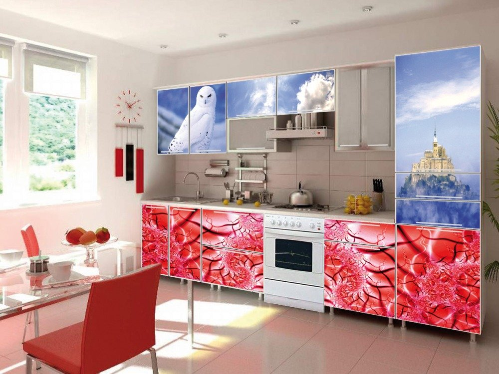

Классическая кухня. Что хотят клиенты?..
Мы пришли к тому, что не умничая и не навязывая собственного мнения, мягко выясняем,
что-же конкретно заказчик имеет в виду, под словами «классическая кухня». И только полностью
поняв клиента начинаем обсуждать, предлагать и рисовать эскизы. Ведь наша главная задача не в том,
чтобы устроить ликбез для покупателя, показывая ему его некомпетентность в вопросе.
Наша главная задача — сделать клиента довольным, дав ему то, что он хочет. И если он считает,
что классическая кухня это именно то, что он себе напридумывал — пусть так и будет.
Современная кухня — дизайн и цвет
В этой статье мне хотелось-бы затронуть вопрос выбора дизайна и цвета для кухни.
В последнее время я стал обращать внимание на то, насколько тусклыми и унылыми стали кухни.
Да и в целом все интерьеры. В чем проблема? Мое мнение — в дизайнерах. Подавляющее большинство
дизайнеров не парятся с подбором цветов, а просто делают интерьер в одном цвете. Берут пару-тройку
разных оттенков одного цвета и вуаля! Готово! Они уже подобрали хорошо сочетающиеся цвета!
Кухни с фотопечатью

© Жан-Леон Жером